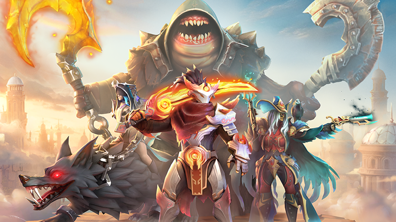

.jpg)
Dota 2 adalah game multiplayer online battle arena (MOBA) yang dikembangkan dan diterbitkan oleh Valve Corporation. Game ini merupakan sekuel dari mod Defense of the Ancients (DotA) yang terkenal di Warcraft III. Dalam Dota 2, dua tim yang terdiri dari lima pemain masing-masing bertarung untuk menghancurkan basis lawan yang disebut Ancient. Setiap pemain memilih karakter yang disebut hero, masing-masing dengan kemampuan unik dan peran tertentu dalam permainan. Permainan Dota 2 berlangsung di peta simetris dengan tiga jalur utama, yaitu top, mid, dan bottom, serta area hutan di antara jalur tersebut. Pemain harus bekerja sama dengan tim mereka untuk mengatur strategi, melakukan farming, dan mengalahkan musuh, baik di jalur maupun di hutan. Kerjasama tim dan komunikasi yang efektif sangat penting untuk meraih kemenangan, karena Dota 2 menekankan aspek strategi dan taktik dalam pertarungan. Dota 2 juga memiliki komunitas yang besar dan aktif, serta ekosistem kompetitif yang berkembang pesat. Turnamen-tournament besar, seperti The International, menarik perhatian jutaan penggemar dan menawarkan hadiah besar. Selain itu, game ini gratis untuk dimainkan, dengan sistem pembelian kosmetik untuk menyesuaikan penampilan hero tanpa memengaruhi gameplay. Secara keseluruhan, Dota 2 adalah game yang kompleks dan mendalam, menawarkan pengalaman yang kaya bagi para pemainnya.
Fitur Utama dan Media:
| Fitur | Deskripsi |
|---|---|
| Hero | Pemain dapat memilih dari lebih dari 100 hero dengan kemampuan unik. Setiap hero memiliki peran tertentu, seperti carry, support, atau offlaner. |
| Peta | Permainan berlangsung di peta simetris dengan tiga jalur (lane) utama dan area hutan (jungle). |
| Item | Pemain dapat membeli item untuk meningkatkan kemampuan hero mereka, mendukung strategi, dan meningkatkan peluang kemenangan. |
| Strategi Tim | Kerja sama tim sangat penting, termasuk komunikasi dan perencanaan taktis untuk mencapai tujuan. |
| Turnamen | Dota 2 terkenal dengan turnamen besar, seperti The International, yang menawarkan hadiah jutaan dolar |
| Speksifikasi |
|
| Link Download | https://store.steampowered.com/app/570/Dota_2/ |
| Gambar Gameplay |  |
| Trailer Game | Link You tube |